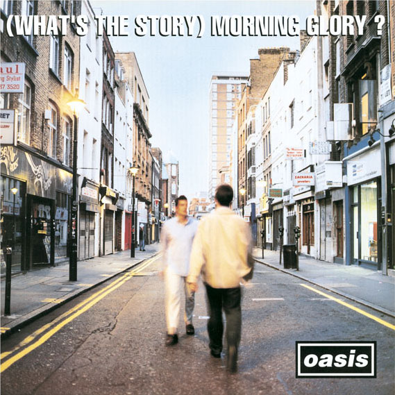

ALBUMS
2ND. (What’s the story) Morning Glory?
브릿팝의 절정을 보여준, 전설을 집약한 앨범이다.
90년대 영국에서 가장 많이 팔린 앨범
영국 앨범차트 10주 1위
영국 앨범 통산 판매량 5위
롤링 스톤지가 선정한 500대 명반 378위
1995년 10월에 발표한 오아시스의 2집 앨범. 너바나의 Nevermind, 라디오헤드의 OK Computer등과 더붙어서 1990년대를 대표하는 명반들중 하나이다. Definitely Maybe와 함께 오아시스의 최고명반으로 평가받고 있다. 굳이 따지자면 대중적인 호소력 면에서는 이 앨범이, 음악성 면에서는 Definitely Maybe가 조금 더 인정받는다. 발표 첫 주에만 영국에서 36만 7천장이 팔리며 10주간 UK차트 1위에 랭크되었고 영국 판매량 470만장으로 통산 5위에 랭크되었다. 그 외 빌보드 200 4위, 세계 여러 차트에서 1위에 랭크되면서 오아시스는 세기말 비틀즈라고 공인받게 된다. 세계적으로도 2200만장이 팔렸다. 앨범 제목은 노엘이 어떤 미국인과 통화하던 중 "what's the story?"라고 묻자 "morning glory"라고 대답한 것을 듣고 마치 how are you? i'm fine, thank you. 하고 인사하는 듯한 느낌을 받아, 그대로 따로 적어뒀다가 여기에 사용했다고 한다.
1. Hello
'Wonderwall'의 스트로크로 시작한다. 아웃트로의 멜로디는 개리 글리터(Gary Glitter)의 'Hello, Hello I'm Back Again'을 표절 샘플링하였다. 때문에 작곡 크레딧에 노엘 갤러거 외에도 원곡자인 Gary Glitter, Mike Leander가 명기되었다.
2. Roll With It
이 앨범에서 두번째로 싱글컷되어 UK차트 2위에 랭크되었다. 1위었던 블러의 'Country House'와의 1위 경쟁은 브릿팝 전쟁으로 회자되고 있다. 이 곡의 'it's all too much for me to take'라는 가사는 비틀즈의 It's All Too Much에서 인용하였다. 리암이 앨범 발매 직후 마약 소지죄로 경찰서에 끌려갔을 때 경찰들이 이 노래를 불러댔다고 한다. 이 때 경찰들이 잡혀온 사람한테 사인을 받는 진풍경이 펼쳐졌다고 한다.
3. Wonderwall
영국 제 2의 국가
영국 초등학교 음악 교과서에도 수록되었다. 2집 (What's the story) Morning Glory? 가 발매 되었을 당시 영국에서는 평범한 사람은 물론이고 거지도 Wonderwall을 길바닥에서 불렀을 정도로 굉장히 인기가 있었으며, 적어도 오아시스 곡 중에서는 Don't Look Back In Anger와 더불어 세계적으로 가장 유명한 곡이다. 싱글로도 나왔으며, 이 싱글은 UK차트 2위에 랭크되었으며, 빌보드 핫100 8위에 랭크되면서 오아시스가 세계적으로 알려지는 계기가 됐다. 2008년까지 영국 내에서만 100만 장의 판매고를 돌파했고 2013년까지 132만 장이 판매되어 영국 내에서 52번째로 많이 팔린 싱글로 랭크돼 있다. 미국에서도 50만장 이상이 팔렸다. 오아시스의 가장 많이 팔린 싱글. 판매량만 놓고 보면 오아시스의 또다른 대표곡인 Don't Look Back In Anger를 의외로 크게 압도한다.
4. Don’t Look Back in Anger
본작에서 가장 유명한 두 노래중에 하나로, 존 레논의 Imagine에서 따온 피아노 반주로 시작한다. 곡의 전체적인 코드 진행은 비틀즈의 Let It Be와 상당히 유사하다. 이 앨범의 파이널 싱글이었으며 UK차트 1위를 차지했다. 보컬은 노엘 갤러거로서, 노엘이 부른 최초의 오아시스 앨범 트랙이자 최초의 싱글이다. 오아시스 후기와 노엘 갤러거의 솔로 공연에서 가장 하이라이트 곡으로 꼽힌다. 존 레논과 관련된 요소들이 많은데 뮤직비디오에서 노엘이 쓰고 나온 빨간색 안경은 존 레논이 자주 착용하던 것과 흡사하며 가사 중 'Let's start a revolution from my bed' 부분은 존 레논과 오노 요코 부부의 평화주의 퍼포먼스 'Bed-In'을 연상시킨다.
5. Hey Now!
느긋하고 나른한 팝로큰롤이며, 4번 트랙까지의 고조된 분위기를 가라앉히는 역할을 한다. 곡 자체는 무난하나, 일부 평론가들과 팬들이 오아시스 1집의 구성을 2집보다 더 높이 평가하게 만드는 주요 원인.
6. The Swamp Song(Ver.1)
11번 트랙과 함께 제목이 없는 곡. 이 곡은 'Wonderwall' 싱글의 비사이드 'The Swamp Song'이며, 컴필레이션 앨범인 The Masterplan에도 수록되었다.
7.Bonehead's Bank Holiday
이 앨범의 바이닐 버전에만 수록 되어있는 곡이다. 제목에서 알 수 있듯이 이 곡은 당시 기타리스트였던 본헤드가 부를 예정이었으나 목이 상하면서 결국 노엘이 불렀다. 대강 쉬는 날이라 휴가 나와서 스페인의 해변에서 요상한 여자를 만났는데 그냥 집에 있을걸 그랬다는 내용이다.
8. Some Might Say
이 앨범에서 첫 번째로 싱글컷되어 그들 최초의 UK차트 1위 곡이 되었다. 노엘 갤러거는 이 곡을 '오아시스의 노래를 상징하는 곡'이라고 표현. B-Side곡인 'Acquiesce'도 이 곡에 전혀 뒤지지 않는 곡이다. 앨런 맥기는 'Acquiesce'를 A-Side로 할 것을 주장했으나 노엘이 무시했다고 한다... 2009년 오아시스 내한 때 노엘이 인터뷰에서 한국인들에게 'Some Might Say'를 들어보길 추천한다는 인터뷰 마무리를 하기도 했다.
9. Cast No Shadow
더 버브의 'History'에 대한 답가. 이에 애쉬크로프트는 'A Northen Soul'을 노엘에게 헌정하였다. 콜드플레이의 크리스 마틴은 자신이 오만함에 빠졌을 때 이 노래를 들으면서 마음을 잡는다고 한다. 이 앨범을 듣고 있으면 '우린 아직도 한참 멀었구나'한다고... 이 앨범에 있는 또 하나의 스탠다드 팝이다. 본래 이 곡은 노엘이 B-Side용으로 작곡했지만 결국 아주 훌륭한 음악이 되어 이 앨범에 실리게 되었다
10. She’s Electric
발랄하고 경쾌하지만 아무 의미는 없는, 90년대 오아시스의 분위기를 알 수 있는 곡이다. 이 노래 또한 스탠다드 팝. 또한 대놓고 비틀즈인 척 한 곡이라고 본인들이 말했다. 후렴구 멜로디에서는 While My Guitar Gently Weeps, 아웃트로에서는 With A Little Help From My Friend 등이 들린다. 지드래곤의 'Butterfly'와의 표절 시비로 한국에서 히트곡들 외에도 널리 알려진 오아시스의 곡이 되었다.
11. Morning Glory
헬리콥터 굉음으로 시작되며, R.E.M.의 'The One I Love'에서 나오는 기타 리프를 따왔다. 앨범에서 가장 사이키델릭한 성향이 강한 곡으로 'Tomorrow Never Knows'라는 가사는 비틀즈의 Tomorrow Never Knows에서 인용하였다. 마약을 하는 것에 대한 노래로써, 이 곡의 후렴구이자 앨범 제목 'What's the story? Morning Glory?'는 노엘이 어느 날 아침에 어떤 미국인과 전화 통화을 하다가 그에게서 들은 말이었다고 한다. 노엘은 그 말에서 '이봐 친구 어떻게 지내?' 하는 느낌을 받았다고 한다. 여담으로 곡이 끝나면서 헬기 소리와 함께 라디오에서 흘러나오는듯한 노래는 1995년 중반 당시 UK차트 12위까지 올라갔던 곡인 Soul II Soul - Love Enuff 라는 곡의 1:49 지점이다. 존 레논이 비틀즈의 'I Am The Walrus' 끝 부분에 사이키델릭한 느낌을 내기 위해 아무 라디오 소리를 집어 넣었던 작업 방식을 노엘이 오마주하여 당시 믹싱과정에 라디오에서 흘러나온 노래 일부분을 곡 끝에 넣은 것 같다.
12. The Swamp Song(Ver.2)
6번 트랙과 같은 역할로, 12번 트랙과의 연결을 위한 파도소리가 삽입되었다.
13. Champagne Supernova
어클레임드 뮤직 기준 1995년 26위, 1990년대 230위, 역대 1680위
영국 밴드 오아시스의 2번째 앨범 (What's the story) Morning Glory?의 12번째 트랙. 어쿠스틱 기타와 파도 소리로 시작하여 폭발하는 기타 솔로로 마무리 되는 7분 28초의 대곡이자 그들의 낙관주의와 당시의 시대정신을 함축한 그들의 상징적인 곡이다. 노엘 갤러거는 이 곡을 자신들의 Stairway to Heaven이라고 말하였다. 이 곡과 'The Swamp Song'의 기타는 더 잼의 폴 웰러가 연주하였다. 영국에서는 싱글컷되지 않았지만 미국 등 몇몇 국가에서는 싱글 컷되었고, 미국에서는 Wonderwall에 이어 두번째로 히트곡이 되면서 모던 록 차트 1위까지 오르는 등 꽤 인기를 얻었다. 다만 가사는 아무런 의미가 없는 단어들의 나열로 인해 BBC가 선정한 가장 최악의 가사 7위에 선정되었다. 별개로 곡 자체의 멜로디나 구성은 대단히 훌륭해서 대부분의 잡지나 사이트에서 뽑은 오아시스 명곡순위에 5위 안에 들어간다. 현재까지 영국에서는 싱글을 내지 않았음에도 불구하고 20만장, 미국에서는 50만장이 팔렸으며, 브릿팝이 절정에 이른 곡이라고 볼 수 있다. 이 싱글이 미국에서 발매된 이후 이만큼 히트한 브릿팝송은 찾기 힘들다.